Technical analysis is broken into two main categories, chart patterns and indicators. Indicators are essentially calculations based on the price and the volume of a security and measures factors such as money flow, trends, volatility and momentum.
Within technical analysis, indicators are used as a measure to gain further insight into to the supply and demand of securities. Indicators, such as volume, are used to confirm price movement and the probability that the given move will continue. Along with using indicators as secondary confirmation tools, they can also be used as a basis for trading as they can form buy-and-sell signals. In this tutorial, we'll take you through the second building block of technical analysis and explore oscillators and indicator in depth.
If you don't know the basics yet of technical analysis, try this Technical Analysis Tutorial instead. Or, if you want to read about the other bulding block to technical analysis, check out this tutorial, Analyzing Chart Patterns.
Indicators can be separated into two main types - leading and lagging - both differing in what they show users.
Leading Indicators
Leading indicators are those created to proceed the price movements of a security giving predictive qualities.
Two of the most well-known leading indicators are the Relative Strength Index (RSI) and the Stochastics Oscillator.
A leading indicator is thought to be the strongest during periods of sideways or non-trending trading ranges, while the lagging indicators are regarded as more useful during trending periods. Users need to be careful to make sure the indicator is heading in the same direction as the trend.
The leading indicators will create many buy and sell signals that make it better for choppy non-trending markets instead of trending markets where it is better to have less entry and exit points.
The majority of leading indicators are oscillators. This means that these indicators are plotted within a bounded range. The oscillator will fluctuate into overbought and oversold conditions based on set levels based on the specific oscillator.
Note: An example of an oscillator is the RSI, which varies between zero and 100. A security is traditionally regarded as overvalued when the RSI is above 70.
Lagging Indicators
A lagging indicator is one that follows price movements and has less predictive qualities. The most well-known lagging indicators are the moving averages and Bollinger Bands®. The usefulness of these indicators tends to be lower during non-trending periods but highly useful during trending periods. This is due to the fact that lagging indicators tend to focus more on the trend and produce fewer buy-and-sell signals. This allows the trader to capture more of the trend instead of being forced out of their position based on the volatile nature of the leading indicators.
How Indicators Are Used
The two main ways that indicators are used to form buy and sell signals are through crossovers and divergence.
Crossovers occur when the indicator moves through an important level or a moving average of the indicator. It signals that the trend in the indicator is shifting and that this trend shift will lead to a certain movement in the price of the underlying security.
For example, if the relative strength index crosses below the 70-level it signals that security is moving away from an overbought situation, which only will occur when the security declines.
The second way indicators are used is through divergence, which occurs when the direction of the price trend and the direction of the indicator trend are moving in the opposite direction. This signals that the direction of the price trend may be weakening as the underlying momentum is changing.
There are two types of divergence - positive and negative. Positive divergence occurs when the indicator is trending upward while the security is trending downward. This bullish signal suggests that the underlying momentum is starting to reverse and that traders may soon start to see the result of the change in the price of the security. Negative divergence gives a bearish signal as the underlying momentum is weakening during an uptrend.
On the other hand, assume that the relative strength index is trending upward while the security's price is trending downward. This negative divergence can be used to suggest that even though the price is lagging the underlying strength, shown by the RSI, traders could still expect to see bulls regain control of the asset's direction and have it conform to the momentum predicted by the indicator.
Indicators that are used in technical analysis provide an extremely useful source of additional information. These indicators help identify momentum, trends, volatility and various other aspects in a security to aid traders when making decisions. It is important to note that while some traders use a single indicator solely for buy and sell signals they are best used in conjunction with price movement, chart patterns, and other indicators.
The on-balance volume indicator (OBV) is one of the most well-known technical indicators and it focuses on the importance of volume and how it can affect a given price and asset's momentum. The OBV indicator is used to measure the positive and negative flow of volume in a security relative to its price over time. It is a simple measure that keeps a cumulative total of volume by adding or subtracting each period's volume depending on the price movement. This measure expands on the basic volume measure by combining volume and price movement.
The idea behind this indicator is that volume precedes price movement, so if a security is seeing an increasing OBV it is a signal that volume is increasing on upward price moves. Decreases mean that the security is seeing increasing volume on down days.
Calculation
The OBV is calculated by taking the total volume for the trading period and assigning it a positive or negative value depending on whether the price was up or down during the trading period. If the price traded above the previous period it is assigned a positive value while a negative value is assigned when the price has fallen during the period.
| 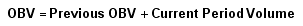 |
(Current Period Volume will be positive if the price increased and negative if the price fell during the period.)
The positive or negative volume total for the period is then added to the previous period's OBV. The OBV itself is simply a running total that is adjusted each period depending on the amount of volume and the direction of the security for the period.
Using the OBV
Again, the idea behind the OBV measure is that volume is thought to precede price movements. If volume is decreasing when the price of a security is rising then it is a sign of increased selling pressure, which if continued, will send the price of a security lower. The opposite is true with increasing volume on up days, which is a sign of buying pressure.
| 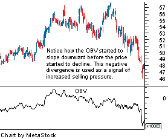 |
The main focus with this indicator should be on its trend. The actual value of the OBV doesn't matter as it includes a lot of past data and there is no relative comparison between the OBV of one security and another. By looking at the recent trend of OBV, one can see whether buying pressure is increasing or decreasing to either confirm an existing trend or to identify divergence.
If the OBV is moving in the same direction as the existing trend, it is a signal that the strength of the trend remains. When the OBV starts to move against the trend, it is a signal that the existing trend is weakening and may reverse.
| For example, when the volume is not increasing during up days in an upward trend it is a sign that buying pressure is weakening. If buying pressure is weakening it is not likely that the upward trend is sustainable.
To help confirm a price trend reversal with the OBV a 20-period moving average of the OBV is often added. When the OBV crosses the 20-period moving average the divergence signal of a trend reversal is confirmed. |
The on-balance volume measure is one of the least complex volume indicators that try to measure price and volume together. While there are more complex indicators, it is the ease of understanding and use that make this volume indicator so popular.
Looking at the flow of money in and out of a security is one of the best ways to determine the likely directions of a security. At the most basic level, the price of a security is determined by the supply and demand for that security, which can both be illustrated by the money flow of the security.
One of the most commonly used indicators to determine the money flow of a security is the accumulation/distribution line (A/D line). It is similar to on-balance volume indicator but instead of only considering the closing price of the security for the period it also takes into account the trading range for the period. This is thought to give a more accurate picture of money flow than of balance volume.
Calculation
The first thing that is calculated is the close location value (CLV), which is a reflection of the closing price of the period relative to the range of the trading. The CLV ranges between +1 and -1, where a value of +1 means the close is equal to the high and the value of -1 means the close was the low. When the CLV is equal to zero, it means that price closed exactly halfway between the high and the low for the day.
The CLV value is then multiplied by the volume and similar to on-balance volume is added to a running total. By multiplying volume by the CLV, the calculation effectively weighs the money flowing in and out of the security.
The CLV is calculated as:
For example, if the high for the day was $59, the low $50, and the close was $55 the CLV would be calculated as follows:
If the volume for the trading day was 10 million shares, the amount added to the accumulation/distribution line would be +1,110,000. As can be seen this value is much different from the +10 million that would be added in the on-balance value measure.
Uses of the accumulation/distribution line
The A/D line measures the trend in the amount of buying or selling pressure in a security. When the line is trending up is a signal of increasing buying pressure as the stock is closing above the halfway point of the range. If the line is trending downward it is a signal of increasing selling pressure in the security.
This line can be used to determine the strength of a trend along with identifying divergence to signal a trend change. The strength of a price trend can be identified by looking at the direction of the trend in the A/D line. It is important that the price trend and the A/D line be trending in the same direction for the price trend to be considered strong.
The A/D line can also be used to identify situations of divergence, which can signal a shift in the price trend. This occurs when the price trend and the A/D line are moving in opposite directions.A bullish signal is formed when there is positive divergence, which means that the A/D line is trending upward while the price is trending downward. A rising A/D line signals that buying pressure is increasing, which should eventually lead to price increases. It is difficult to imagine that a price can continue to fall while buying pressure is clearly increasing.
A bearish signal is formed when there is negative divergence, which occurs when the A/D line is trending downward while the price is trending upward. A falling A/D line is a sign of selling pressure, which as it increases makes it difficult for the upward price trend to continue.
The A/D line expands on the on-balance volume measure to help technical trader's measure price and volume together and compare it against the pricing trend in the market.
The average directional index (ADX) is a trend indicator used to measure the strength and momentum of an existing trend. This indicator's main focus is not on the direction of the trend but with the momentum.
The ADX is a combination of two price movement measure, the positive directional indicator (+DI) and the negative directional indicator (-DI). The +DI measures the strength of the upward trend while the –DI measures the strength of the downward trend. These two measures are also plotted along with the ADX line.
Calculation
The calculation for the ADX is considerably complex and entails several calculations that go beyond the scope of this tutorial. But, below is the general formulation of the index.
The ADX along with the +DI and –DI are plotted between a bounded range of zero and 100. The standard time period used in this indicator is 14 periods.
Because the ADX is a range-bounded indicator, it gives certain signals when the indicator moves to new levels.
When the ADX is above 40 the trend is considered to have a lot of directional strength either up or down depending on the current direction of the trend. Extreme readings to the upside are considered to be quite rare compared to low readings. When the ADX indicator is below 20 the trend is considered to be weak or non-trending.
The strength in a trend is considered to weaken or strengthen when these lines (40 and 20) are crossed by the ADX. When the ADX has had a strong move above 40 but fails to remain above, it is suggested that the trend is weakening and will reverse. When the ADX moves above 20 it is a sign that a new trend in the security is starting.
| 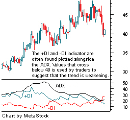 |
It is important to remember that in regard to this trend indicator the ADX does not care about the direction of the trend it only is concerned with the strength of it. When the ADX is high there is strength in a trend. When it is low it signals little to no trending in the security. When there are shifts in the ADX it is a signal of a new trend or trend reversal.
The two measures used to compute the ADX are also used to signal weakening in trends and the starting of new trends. Signals are formed when the two lines, the +D and –D, crossover each other. A buy signal is formed when the +D, which measures the upward trend, crosses above the –D, which measures the downward trend. A sell signal is formed when the –D crosses above the +D. These crossovers signal a shift from an upward trend to a downward trend or visa versa.
This trend indicator is extremely popular and useful as it combines both aspects of trend strength with the ADX and the direction of trends with the +DI/-DI lines. Is another useful indicator for any technical trader.
The Aroon is a trending indicator used to measure if a security is in a trend and the magnitude of that trend. The indicator can also be used to identify when a new trend is set to begin.
The indicator is comprised of two lines, an Aroon-up line and an Aroon-down line.
The Aroon-up line measures the amount of time it has been since the highest price during the time period. The Aroon-down line, on the other hand, measures the amount of time since the lowest price during the time period.
If a 100 period timeframe is used and it has been 25 periods since the highest price in the last 100 days the Aroon up value would currently be set at 75. If it has been 80 periods since the lowest period the Aroon down would be 20. The numbers computed for each of the up and down are then plotted as a line on the Aroon indicator between a range of zero and 100.
Calculation
| 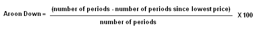 |
In general, the security is considered to be in an uptrend when the Aroon-up line is above 70 along with being above the Aroon-down line. The security is in a downtrend when the Aroon-down line is above 70 and also above the Aroon-up line. The trend is considered to be in a consolidation pattern when the two lines are near each other in between 70 and 30.
| 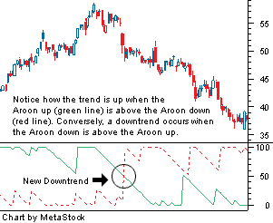 |
As you can see from the chart above, trend reversal signals are given when the Aroon up and Aroon down cross each other or the Aroon lines cross the 50 line on the chart. Note: These two events do not always occur at the same time like they did in the chart above. If an Aroon up falls below the 50 like it did in the chart, it signals that the uptrend is weakening. The downtrend is weakening when the Aroon down crosses below the 50 line. It is the same idea when the Aroon up or down crosses above the 50 it signals that the trend is strengthening.
Aroon Oscillator
An expansion of the Aroon is the calculation of the Aroon oscillator, which simply plots the difference between the Aroon-up and -down lines. This line is again plotted between a range of -100 and 100. The centerline at zero in the oscillator is considered to be a major signal line determining the trend.
The higher the value of the oscillator from the centerline point, the more upward strength there is in the security and the lower from the centerline the more downward pressure.
The Aroon lines and Aroon oscillators are fairly simple concepts to comprehend but yield powerful information about trends. This is another great indicator to add to the arsenal of any technical trader.
The moving average convergence divergence (MACD) is one of the most well known and used indicators in technical analysis. It is used to signal both the trend and momentum behind a security.
The MACD indicator is comprised of two exponential moving averages (EMA), covering two different time periods, which help to measure momentum in the security. The MACD is simply the difference between these two moving averages, which in practice are generally a 12-period and 26-period EMA. The MACD is plotted against a centerline along with a nine-period EMA, which is referred to as the "signal line".
The idea behind this momentum indicator is to measure short-term momentum compared to long-term momentum to help determine the future direction of the asset.
Calculation
| 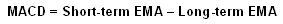 |
The most commonly used moving average values are 26-day and 12-day EMAs for the MACD calculation and a nine-day EMA of the MACD for the signal line.
These values can be adjusted to meet the needs of the technician and the security. For more volatile securities shorter term averages are used while less volatile securities should have longer averages.
Another aspect to the MACD indicator that is often found on charts is the MACD histogram. The histogram is plotted on the centerline and represented by bars. Each bar is the difference between the MACD and the signal line or, in most cases, the nine-day EMA. The higher the bars are in either direction the more momentum behind the direction the bars point.
Buy-and-Sell Signals
The buy-and-sell signals in regard to the MACD are formed either because of crossovers or divergence.
The first signal that is formed by the MACD is when the MACD line crosses the signal line, which is the EMA of the MACD. When the MACD crosses the signal line in an upward direction it is a bullish sign as the asset is gaining upward momentum. When the MACD is gaining upward momentum it reflects that the shorter term moving average (12-day) is increasing at a faster rate than the (26-day) and that the trend is starting to strengthen in the upward direction.
| 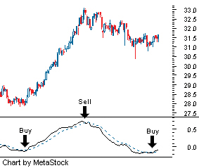 |
When the MACD crosses below the signal line it suggests that upward momentum is weakening with downward pressure increasing. It is signals that the shorter term momentum is falling faster than the longer term average, signaling an increase in short-term selling.
The second signal, which also deals with crossovers, occurs when the MACD crosses the centerline. If the MACD line crosses the centerline in an upward direction it signals upward momentum. This upward crossover can also be seen on the price chart at the exact movement when the 12-day moving average is crossing the 26-day in an upward direction.
Downward momentum is signaled when the MACD falls below the centerline. This is the point in which the 12-day moving average falls below the 26-day moving average - a sign of increased downward momentum.
The third signal that is formed by the MACD line is when it diverges from the price movement in the security. This signals that the momentum in the security is moving in the opposite direction of the true trend and suggests a future weakening in the price trend. If the MACD line is moving in an upward direction while the price is moving downward it is a bullish sign. The opposite is true if the MACD line is moving downward while the price is moving upward.
The MACD indicator is by far one of the most well known and commonly used in technical analysis. It is important that anyone using technical analysis become well versed in this momentum indicator.
The relative strength index (RSI) is another one of the most frequently used and well known momentum indicators in technical analysis. It is used to signal overbought and oversold conditions in a security.
The indicator is plotted between a range of zero to 100 where 100 is the highest overbought condition and zero is the highest oversold condition. The RSI helps to measure the strength of a security's recent up moves compared to the strength of its recent down moves. This helps to indicate whether a security has seen more buying or selling pressure over the trading period.
The standard calculation uses 14 trading periods as the basis for the calculation which can be adjusted to meet the needs of the user. If the trading periods used is lowered then the RSI will be more volatile and is used for shorter term trades.
Calculation
| 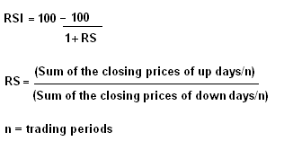 |
How the RSI is used
Like most indicators there are two general ways in which the indicator is used to generate signals - crossovers and divergence. In the case of the RSI, the indicator uses crossovers of its overbought, oversold and centerline.
The first technique is to use overbought and sold lines to generate buy-and-sell signals. In the RSI, the overbought line is typically set at 70 and when the RSI is above this level the security is considered to be overbought. The security is seen as oversold when the RSI is below 30. These values can be adjusted to either increase or decrease the amount of signals that are formed by the RSI.
| 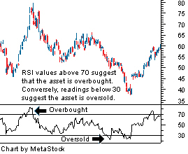 |
A buy signal is generated when the RSI breaks the oversold line in an upward direction, which means that it goes from below the oversold line to moving above it. A sell signal is formed when the RSI breaks the overbought line in a downward direction crossing from above the line to below the line. A more conservative approach can be used by setting the overbought and oversold levels at 80 and 20, respectively.
Another crossover technique used in formulating signals is using the centerline (50). This technique is exactly the same as using the overbought and oversold lines to formulate signals. This technique will often form signals after a movement in the direction they are predicting but are used more as a confirmation then a signal compared to the other techniques. A downward trend is confirmed when the RSI crosses from above 50 to below 50. An upward trend is confirmed when the RSI crosses above 50.
Divergence can be used to form signals as well. If the RSI is moving in an upward direction and the security is moving in a downward direction it signals to technical traders that buying pressure is increasing and the downtrend may be coming to an end. Divergence can also be used to signal a reversal in an upward trend where the RSI is decreasing signaling increasing selling pressure in an upward trend.
The RSI is a standard component on any basic technical chart. The relative strength indicator focuses on the momentum underlying the security and is a great secondary measure to be used by traders. It is important to note that the RSI is often not used as the sole generation of buy-and-sell signals but used in conjunction with other indicators and chart patterns.
The stochastic oscillator is another well-known momentum indicator used in technical analysis. The idea behind this indicator is that the closing prices should predominantly close in the same direction as the prevailing trend.
In an upward trend the price should be closing near the highs of the trading range and in a downward trend the price should be closing near the lows of the trading range. When this occurs it signals continued momentum and strength in the direction of the prevailing trend.
The stochastic oscillator is plotted within a range of zero and 100 and signals overbought conditions above 80 and oversold conditions below 20. The stochastic oscillator contains two lines. The first line is the %K which is essentially the raw measure used to formulate the idea of momentum behind the oscillator. The second line is the %D which is simply a moving average of the %K. The %D line is considered to be the more important of the two lines as it seen to produce better signals.
The stochastic oscillator generally uses the past 14 trading periods in the calculation but can be adjusted to meet the needs of the user.
Calculation
| 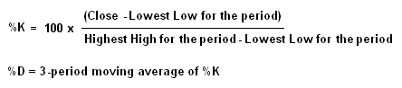 |
There are three versions of the stochastic oscillator fast, slow and full. The purpose of each version of the stochastic is to smooth the oscillator and help remove some of the randomness. The fast stochastic oscillator is the basic version of the indicator and is the one represented by the above equations. The slow and full stochastics smooth the data that is provided by the raw data given in the fast stochastic. Both of these oscillators reflect the same period and plot two lines.
Slow Stochastic:
| 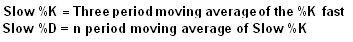 |
The number of periods used in calculating the slow %D can be adjusted to meet the user's needs.
Full Stochastic:
| 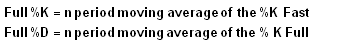 |
Stochastic Signal Generation
The main signal that is formed by this oscillator is when the %K line crosses the %D line. A bullish signal is formed when the %K breaks through the %D in an upward direction. A bearish signal is formed when the %K falls through the %D in a downward direction.
| 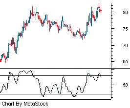 |
Divergence can also be used to formulate buy–and-sell signals. When looking for divergence the %D line is the one most used as it gives clearer signals due to its smoothed nature. A divergence signal is formed when the %D and the security move away from one another, signaling a weakening of the trend.
If the security is moving in an upward direction and the %D is moving in a downward direction this is a bearish sign. A bullish sign is formed when the %D is moving upward when the security is moving downward. If this divergence is happening when the %D is in an overbought (above 80) or an oversold (below 20) position on the oscillator the signal formed is much stronger. However, the signal is not considered complete until the %K line crosses the %D line in the opposite direction of the price trend.
The stochastic oscillator is a little more difficult to calculate compared to other technical indictors but none the less it is one of the more commonly used indicators. The indicator can be adjusted to any time frame but is normally set to equal 14 periods.
The technical indicators that are generally aimed at specific stocks, which were discussed in previous sections, can also be used on market indexes. However, there is also a series of indicators, which were formulated specifically for gauging the direction of the major market indexes and are not used to analyze individual securities.
The main difference between market indicators and technical indicators is that market indicators are not plotted on the same chart as a security but are plotted on a chart by themselves. The market indicators do not reflect just one security but a large array of securities in the market and vary from measuring market sentiment to the current volatility in the market.
Volatility Indexes
The volatility indexes (VIX) are used to gain an understanding of the amount of volatility in the market that the index tracks. It is based on the movements and expectations in the market. To many traders' surprise, it is possible to trade market volatility and each of the main volatility indexes can actually be bought or sold on a regulated exchange.
These indexes are traded on the Chicago Board Options Exchange where the VIX tracks the S&P 500, the VXN tracks the Nasdaq 100, and the VXD tracks the Dow Jones Industrial Average.
Each of the volatility indexes are calculated by using the implied volatility of a relevant mix of put and call index options. This gives a good idea of the perceived risk in the market from participants, with the higher the volatility index value the higher the perceived risk.
In general, the volatility index and the index itself tend be negatively correlated by moving in the opposite direction. When everything is going good in the market and prices are rising, the perceived risk is at its lowest. When the market is moving lower the perceived risk is at its highest.
These volatility indexes are used to identify points in the market where participants are either overly bullish or bearish. When the volatility indexes are at recent highs while the market is down it is a positive signal that the market is too bearish. When the volatility index is extremely low and the market is high it suggests that there is too much bullishness in the market and is a negative sign. (For more on this subject see, Getting a VIX on Market Direction and Introducing The VIX Options.)
Advance-Decline Line
One of the most well known and used market breadth indicators is the advance-decline line, which compares the amount of securities that trader higher for the day in the market compared to the amount of securities down for the day.
The total number of companies trading higher is subtracted by the number of declines and the total is then cumulated to create the advance-decline line. For example if yesterday's advance-decline total was 100 and there were 5 more advances then declines the advance-decline total would go from 100 to 105.
This market indicator is used to signal reversals in the market trend by looking for divergence. This happens when the advance-decline line is moving in the opposite direction of the market. The advanced-decline line reversal tends to precede market reversals when there is a divergence after a long period of both the indicator and the market moving in the same direction.
McClellan Oscillator
This market indicator measures the breadth in the market by using the number of advances and declines to form moving averages, which are then used in conjunction with each other to calculate the indicator.
The McClellan oscillator is calculated by taking the difference between the 19-day and the 39-day exponential moving average of the net of advances and declines in the market. The differences are then plotted over time against a centerline. When the oscillator is at the centerline, which is the zero level, it means that the two averages are equal.
When the oscillator is above the centerline it means that the 19-day moving average is above the 39-day moving average and suggests that advances are moving ahead of declines. If the oscillator is below the centerline it means the 19-day moving average is below the 39-day moving average and suggests that declines are moving ahead of advances.
Market buy-and-sell signals are formed when the McClellan oscillator crosses over the centerline. When it crosses in an upward direction a buy signal is formed and sell signal is formed when the McClellan oscillator crosses in a downward direction.
McClellan Summation Index
The McClellan summation index expands on the McClellan Oscillator by using the oscillator to focus on longer term trends in advances and declines. This is done by creating a running total of the McClellan oscillator in the same way the advance-decline line was created.
| 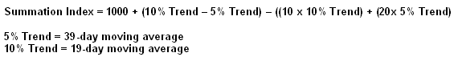 |
This index is generally thought to fluctuate +/- 1,000 of the centerline which is zero.
This measure is thought to give more accurate signals of market tops and bottoms and is a useful measure of the markets strength. A market top will generally be signaled when the McClellan summation index is extremely high (over 1,000) and a market bottom will be formed when it is extremely low (under 1,000).
Shifts from a bull market to a bear market are often represented by large rapid shifts in the summation index. A new bull market signal is formed, for example when the summation index goes from -900 to +900 within a matter of months.
Arms Index - TRIN
The Arms index or TRIN (Traders Index) is another market breadth indicator used to evaluate the health of the overall market. It compares advances and declines along with the volume behind the advances and declines.
The Arms index is calculated by taking the number of advances and dividing it by the number of declines. That number is then divided by the volume of the advances by the volume of the declines.
The number shown on the Arms index chart is a moving average of the numbers calculated in the Arms index, which helps smooth the data. The length of the moving average is adjusted to reflect the length of the user's outlook: short, intermediate or long term.
The moving average is plotted against a centerline of one. When the Arms index is at one, the market is considered to be neutral as the ratio of advances to declines equals the ratio of advancing volume to declining volume. Buy-and-sell signals are formed when the Arms index is at extremes. Sell signals are formed when the index moves towards three to four and buy signals are formed near zero.
The goal of every short-term trader is to determine the direction of a given asset's momentum and to attempt to profit from it. There have been hundreds of technical indicators and oscillators developed for this specific purpose and this tutorial has just covered the tip of the iceberg.
Here is a brief summary of what we've covered:
{kind=link}
{kind=link}
{kind=link}
{kind=link}
{kind=link}
{kind=link}
{kind=link}
{kind=link}
{kind=link}
{kind=link}
{kind=link}
{kind=link}
{kind=link}
{kind=link}
{kind=link}
{kind=link}
{kind=link}